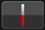

Подготовительная работа
ВРМ и Сетка ударов
Правильно отрегулировав заранее сетку ударов (и ВРМ), можно установить метки, петли и метки быстрого доступа на позиции ударов. (Функция квантования)
 Подробнее о функциях воспроизведения с помощью сетки ударов и ВРМ (синхронизация, микширование, др.) смотрите инструкции по эксплуатации к соответствующему DJ изделию.
Подробнее о функциях воспроизведения с помощью сетки ударов и ВРМ (синхронизация, микширование, др.) смотрите инструкции по эксплуатации к соответствующему DJ изделию.
1При прикосновении к [Prepare] в главном меню открывается панель просмотра.
- Сетки ударов не могут регулироваться при подключении к DJ проигрывателям. Для этого, возвратитесь в главное меню и временно отмените подключение, затем откройте панель просмотра.
2Прикоснитесь к дорожке, чью сетку ударов нужно отрегулировать.
Отображается панель проигрывателя и запускается воспроизведение дорожки.
3Прикоснитесь к  в нижнем правом углу дисплея формы сигнала и откройте опции регулировки сетки ударов.
в нижнем правом углу дисплея формы сигнала и откройте опции регулировки сетки ударов.

Дисплей позиции удара изменяется с точек на вертикальную линию.
4Прикоснитесь к [ ] в панели проигрывателя и установите паузу воспроизведения.
] в панели проигрывателя и установите паузу воспроизведения.
5Перетаскивая увеличенный дисплей формы сигнала влево и вправо, отрегулируйте его таким образом, чтобы позиция удара была расположена на белой вертикальной линии в центре.
- Увеличенный дисплей формы сигнала можно увеличивать или уменьшать, сводя или разводя его пальцами. Позицию, где установлена пауза можно передвигать в единицах миллисекунд, увеличив и перетаскивая ее.
6При прикосновении к  вся сетка ударов сдвигается вместе с белой вертикальной линией в центре по отношению к позиции удара.
вся сетка ударов сдвигается вместе с белой вертикальной линией в центре по отношению к позиции удара.
Если нужно только сдвинуть раздел сетки ударов вне белой вертикальной линии в центре, прикоснитесь к  вместо
вместо  .
.
7Прикоснитесь к  в нижнем правом углу дисплея формы сигнала и закройте опции регулировки сетки ударов.
в нижнем правом углу дисплея формы сигнала и закройте опции регулировки сетки ударов.
 Примечание
Примечание
Для отмены всех отрегулированных позиций ударов и ВРМ и восстановления их прежнего состояния проведите повторный анализ музыкального файла.

Опции регулировки сетки ударов
По опциям регулировки сетки ударов смотрите таблицу ниже.
Иконка | Описание |
Вся сетка ударов сдвигается по отношению к позиции, где в данный момент установлена пауза воспроизведения дорожки (белая вертикальная линия в центре). | |
Перемещают сетку ударов влево или вправо в единицах 1 мс.
| |
Уменьшает интервал сетки удара на 1 мс. | |
Увеличивает интервал сетки удара на 1 мс. | |
Значение ВРМ умножается на 2 (с уменьшением интервала сетки ударов в 1/2 раза). | |
Значение ВРМ делится на 1/2 (с двойным увеличением интервала сетки ударов). | |
Точка запуска для регулировки сетки ударов временно устанавливается на позицию, где в данный момент установлена пауза воспроизведения дорожки (белая вертикальная линия в центре), и сдвигается только раздел сетки ударов вне точки запуска, по отношению к точке запуска. Пока точка запуска не отменена, только позиции ударов вне точки запуска будут отображаться в виде вертикальных линий, и операции по регулировке сетки ударов будут влиять только на раздел сетки ударов, располагающийся вне точки запуска. | |
Отменяет временно установленную точку запуска для регулировки сетки ударов. Позиции всех ударов еще раз отображаются в виде вертикальных линий, и операции регулировки сетки ударов еще раз влияют на всю сетку ударов. | |
Отменяет ранее выполненную операцию. Можно отменить до 10 последних операций. | |
Включает и отключает звучание метронома, слышимое во время воспроизведения, а также переключает его уровень громкости (высокий, средний, низкий). Прикоснувшись и удерживая, можно выбрать тональность. | |
Используйте для ввода значения ВРМ и его редактирования. Интервал сетки ударов изменяется в соответствии с введенным значением ВРМ. | |
 | Позиция удара, ближайшая к белой вертикальной линии в центре увеличенного дисплея формы сигнала обозначается красной линией в качестве первого удара в измерении. Красные линии, обозначающие первый удар в измерении отображаются на сетке ударов через каждые четыре удара, начиная с начала и до конца дорожки. |